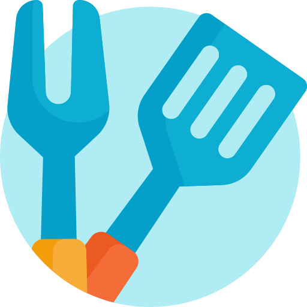

<ion-header [translucent]="true">
  <ion-toolbar>
    <ion-title>
      <ion-icon name="restaurant-outline"></ion-icon> Inicio de sesion <ion-icon name="restaurant-outline"></ion-icon>
    </ion-title>
  </ion-toolbar>
</ion-header>

<ion-content [fullscreen]="true">
  
  <body class="text-center">    
    <main class="form-signin">
      
      <form *ngIf="!iniciado">

        <ion-list>
          <p> Correo electronico: </p> 
          <ion-item>
            
            <ion-input type="email" id="floatingInput" value={{emailIngreso}} #email ></ion-input>
          </ion-item>
        
          <p> Contraseña: </p> 
          <ion-item class="item">
          
            <ion-input type="password" id="floatingPassword" value={{contraIngreso}} #password></ion-input>
          </ion-item>
          
            
        </ion-list>

        <ion-button class="botonIngresar" size="large" shape="round" expand="full"  (click)="OnSignIn(email.value, password.value)"><ion-icon name="happy-outline"></ion-icon> Ingresar <ion-icon name="happy-outline"></ion-icon></ion-button>
         
      </form>     
   
    </main>
<br>
   

  </body>


  <ion-fab vertical="bottom" horizontal="center" slot="fixed">
    <ion-fab-button color="primary"  >
      
    </ion-fab-button>
    
    <ion-fab-list side="start">
      <ion-fab-button color="danger" (click)="completaIngreso('duenio')" >
        Dueño
      </ion-fab-button>
      <ion-fab-button color="danger" (click)="completaIngreso('supervisor')" >
        Super
      </ion-fab-button>
    </ion-fab-list>
    <ion-fab-list side="top">
      <ion-fab-button color="dark" (click)="completaIngreso('metre')" >
        Metre
      </ion-fab-button>
      <ion-fab-button color="dark" (click)="completaIngreso('mozo')" >
        Mozo
      </ion-fab-button>
      <ion-fab-button color="dark" (click)="completaIngreso('bartender')" >
        Bart
      </ion-fab-button>
      <ion-fab-button color="dark" (click)="completaIngreso('cocina')" >
        Cocina
      </ion-fab-button>
    </ion-fab-list>
      <ion-fab-list side="end">
      <ion-fab-button color="warning" (click)="completaIngreso('registrado')" >
        Cliente
      </ion-fab-button>
      <ion-fab-button color="warning" (click)="completaIngreso('anonimo')" >
        Anon
      </ion-fab-button>
    </ion-fab-list>
  </ion-fab>

</ion-content>

